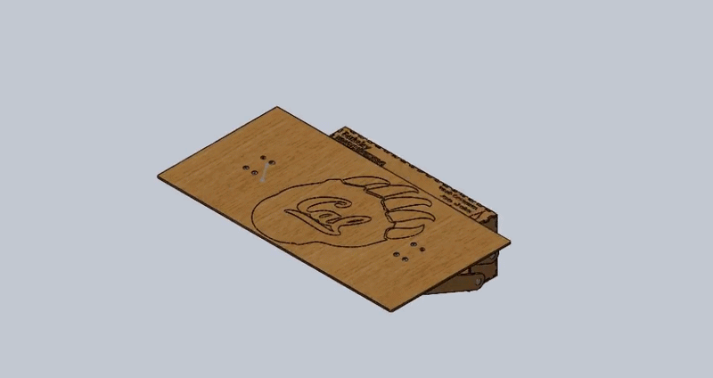

DeskLift is a mechanical design project focused on improving ergonomic workspace efficiency. The system lifts a portion of a desk surface using a motor-driven four-bar linkage, allowing users to alternate between a flat workspace and an elevated platform for keyboards or documents.
Modern desk setups often suffer from limited usable space due to keyboards, monitors, and accessories occupying the surface. This project addresses the need for dynamic workspace reconfiguration without manually moving equipment.
We designed a collapsible four-bar linkage mechanism that raises a desk platform from a flat position to an elevated position (up to ~95°). The system is motor-driven and allows quick switching between configurations to increase usable workspace.
The system was designed to achieve rapid motion between two stable toggle positions. Motion speed was tuned to balance usability and structural loading during acceleration and deceleration phases.
Worst-case loading analysis assumed a 1.5 kg downward force applied to the platform. Results showed a maximum deflection of approximately 0.5 mm and a maximum stress of 44 MPa, which remains below the material yield strength (57.9 MPa).
DeskLift demonstrates a practical ergonomic solution using a four-bar linkage system combined with simple motor control. The design successfully improves usable desk space while maintaining compact mechanical packaging and stable toggle behavior.